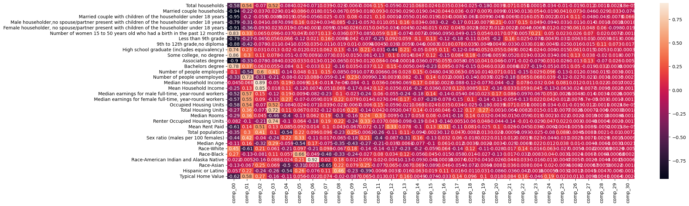

Principal component analysis is a method where we can transform high dimensional data into a lower-dimensional representation. The first principle component maximizes the variance in the data, and each subsequent principle component is orthogonal to the others. These components very quickly encapsulate all the data’s variability, as you will see that the first few principle components do most of the job in explaining the variance. Therefore, you can use PCA to see what variables are necessary and what variables you do not need as they are the most important patterns.
Code
import pandas as pdimport numpy as npimport matplotlib.pyplot as plt#from sklearn.decomposition import PCA#from sklearn import preprocessingfrom statsmodels.multivariate.pca import PCAimport seaborn as snsfrom sklearn.manifold import TSNEfrom sklearn.preprocessing import StandardScalerrecord=pd.read_csv('data/RecordData.csv')record=record.drop(['Year','RegionName'],axis=1)record.head()
Total households
Married couple households
Married couple with children of the householder under 18 years
Male householder,no spouse/partner present with children of the householder under 18 years
Female householder, no spouse/partner present with children of the householder under 18 years
Number of women 15 to 50 years old who had a birth in the past 12 months
c:\Users\npeno\anaconda3\Lib\site-packages\statsmodels\multivariate\pca.py:563: EstimationWarning: Only 31 eigenvalues are positive. This is the maximum number of components that can be extracted.
warnings.warn('Only {num:d} eigenvalues are positive. '

This shows us what features are correlated with the first principle component, and what features will change together. For example, there is a high negative correlation between the first principle component and percent change of married couple households and married couple households with children under 18 years old. So, you could say that as the percent change of married couple households decrease, so does the percent change of married couple households with children, which makes a lot of sense. There are definitely a lot if redundant variables in my data set.
Code
print(loadings)
comp_00 comp_01 \
Total households -0.175812 0.256873
Married couple households -0.283751 -0.104949
Married couple with children of the householder... -0.284422 -0.094214
Male householder,no spouse/partner present with... -0.236433 -0.144831
Female householder, no spouse/partner present w... -0.273693 -0.169895
Number of women 15 to 50 years old who had a bi... 0.250620 0.157151
Less than 9th grade -0.238491 -0.125836
9th to 12th grade,no diploma -0.265389 -0.198263
High school graduate (includes equivalency) 0.223171 0.110411
Some college, no degree 0.257255 0.140807
Associates degree -0.270666 -0.154192
Bachelors degree 0.235542 0.177002
Number of people employed 0.031062 -0.255672
Number of people unemployed -0.099124 0.343979
Median Household Income -0.013525 0.031944
Mean Household Income -0.074350 0.059318
Median earnings for male full-time, year-round ... -0.157543 0.269660
Median earnings for female full-time, year-roun... -0.172815 0.260006
Occupied Housing Units -0.175812 0.256873
Total Housing Units -0.082453 0.171418
Median Rooms -0.086558 0.169374
Renter Occupied Housing Units -0.024645 -0.046997
Mean Rent Paid -0.183594 0.064758
Total population -0.104039 0.140432
Sex ratio (males per 100 females) -0.133004 0.200413
Median Age -0.033965 0.074912
Race-White 0.134997 -0.286344
Race-Black 0.080493 -0.062941
Race-American Indian and Alaska Native -0.006469 -0.002458
Race-Asian -0.037633 -0.031664
Hispanic or Latino -0.017097 0.104454
Typical Home Value -0.187627 0.273763
comp_02 comp_03 \
Total households -0.041297 0.334708
Married couple households -0.021953 -0.018613
Married couple with children of the householder... -0.032164 -0.005769
Male householder,no spouse/partner present with... -0.024172 -0.056104
Female householder, no spouse/partner present w... -0.054392 -0.014988
Number of women 15 to 50 years old who had a bi... 0.038264 0.062428
Less than 9th grade -0.038444 0.036285
9th to 12th grade,no diploma -0.045592 -0.007149
High school graduate (includes equivalency) 0.018343 0.008309
Some college, no degree 0.061736 0.050604
Associates degree -0.045661 -0.054160
Bachelors degree 0.037066 0.035572
Number of people employed 0.351453 0.266233
Number of people unemployed -0.180975 -0.133079
Median Household Income 0.521423 -0.032403
Mean Household Income 0.498077 -0.011832
Median earnings for male full-time, year-round ... 0.087065 -0.078914
Median earnings for female full-time, year-roun... 0.052860 -0.080028
Occupied Housing Units -0.041297 0.334708
Total Housing Units -0.045309 0.469018
Median Rooms 0.026582 -0.296800
Renter Occupied Housing Units -0.120724 0.476224
Mean Rent Paid 0.296787 0.087065
Total population 0.241117 0.066477
Sex ratio (males per 100 females) -0.023775 -0.152739
Median Age -0.189800 0.190196
Race-White 0.124471 0.039450
Race-Black -0.047717 0.074449
Race-American Indian and Alaska Native -0.096688 0.056859
Race-Asian 0.146661 0.044865
Hispanic or Latino -0.138762 -0.168922
Typical Home Value 0.155783 -0.102195
comp_04 comp_05 \
Total households -0.072272 0.021530
Married couple households -0.012204 0.076903
Married couple with children of the householder... 0.001663 0.050258
Male householder,no spouse/partner present with... -0.084484 0.141246
Female householder, no spouse/partner present w... 0.016201 -0.048344
Number of women 15 to 50 years old who had a bi... -0.031907 0.042023
Less than 9th grade 0.056733 -0.111619
9th to 12th grade,no diploma -0.035041 -0.031175
High school graduate (includes equivalency) 0.017201 -0.010685
Some college, no degree -0.043660 -0.062417
Associates degree -0.027370 0.029546
Bachelors degree -0.072152 0.090322
Number of people employed -0.118417 0.043255
Number of people unemployed -0.068599 -0.018621
Median Household Income 0.159509 -0.006163
Mean Household Income 0.090642 -0.108469
Median earnings for male full-time, year-round ... 0.165256 -0.008443
Median earnings for female full-time, year-roun... 0.234965 -0.063180
Occupied Housing Units -0.072272 0.021530
Total Housing Units 0.091177 0.060000
Median Rooms -0.343691 -0.119331
Renter Occupied Housing Units -0.086785 0.057854
Mean Rent Paid 0.073437 0.082692
Total population -0.463358 0.200304
Sex ratio (males per 100 females) 0.189825 0.298399
Median Age -0.051145 -0.482304
Race-White -0.177610 0.087159
Race-Black 0.048970 0.595597
Race-American Indian and Alaska Native 0.020349 0.192401
Race-Asian -0.427826 -0.275755
Hispanic or Latino -0.462499 0.232964
Typical Home Value -0.097289 0.050536
comp_06 comp_07 \
Total households -0.069601 0.040616
Married couple households -0.017941 0.015132
Married couple with children of the householder... -0.054417 0.025334
Male householder,no spouse/partner present with... 0.023200 -0.035089
Female householder, no spouse/partner present w... -0.001008 -0.009835
Number of women 15 to 50 years old who had a bi... 0.006934 0.131700
Less than 9th grade 0.020635 0.161289
9th to 12th grade,no diploma 0.034525 -0.011627
High school graduate (includes equivalency) 0.020852 0.064396
Some college, no degree 0.008818 -0.075002
Associates degree 0.012272 -0.011935
Bachelors degree -0.031654 0.122012
Number of people employed 0.108385 0.158484
Number of people unemployed 0.085554 -0.060479
Median Household Income 0.134848 -0.017320
Mean Household Income -0.007171 -0.052465
Median earnings for male full-time, year-round ... -0.080137 -0.235689
Median earnings for female full-time, year-roun... -0.057507 0.019407
Occupied Housing Units -0.069601 0.040616
Total Housing Units 0.031256 -0.124282
Median Rooms 0.060697 0.196985
Renter Occupied Housing Units -0.170729 0.195749
Mean Rent Paid 0.013183 0.106861
Total population 0.092974 0.098734
Sex ratio (males per 100 females) -0.104101 0.017397
Median Age 0.160790 -0.077742
Race-White -0.207497 0.100943
Race-Black -0.047667 -0.494744
Race-American Indian and Alaska Native 0.897478 0.020161
Race-Asian 0.003018 -0.667031
Hispanic or Latino -0.074448 0.110356
Typical Home Value -0.021517 0.076785
comp_08 comp_09 ... \
Total households -0.024058 -0.007651 ...
Married couple households -0.072003 0.067468 ...
Married couple with children of the householder... -0.031529 0.091676 ...
Male householder,no spouse/partner present with... 0.091098 -0.240744 ...
Female householder, no spouse/partner present w... -0.036796 0.030232 ...
Number of women 15 to 50 years old who had a bi... -0.038232 0.087709 ...
Less than 9th grade -0.009238 0.048028 ...
9th to 12th grade,no diploma -0.020437 0.011635 ...
High school graduate (includes equivalency) 0.137697 -0.187922 ...
Some college, no degree 0.033581 -0.017658 ...
Associates degree -0.069527 0.021401 ...
Bachelors degree -0.170101 0.040172 ...
Number of people employed -0.090326 -0.104117 ...
Number of people unemployed -0.152481 0.260190 ...
Median Household Income 0.000005 -0.095904 ...
Mean Household Income 0.073436 -0.192447 ...
Median earnings for male full-time, year-round ... 0.108608 -0.026196 ...
Median earnings for female full-time, year-roun... 0.229946 0.090084 ...
Occupied Housing Units -0.024058 -0.007651 ...
Total Housing Units 0.017312 0.267119 ...
Median Rooms -0.318885 -0.185227 ...
Renter Occupied Housing Units 0.235107 -0.268981 ...
Mean Rent Paid 0.045632 -0.076585 ...
Total population -0.246867 0.283750 ...
Sex ratio (males per 100 females) -0.069576 -0.205501 ...
Median Age -0.373063 -0.487366 ...
Race-White -0.072007 0.199947 ...
Race-Black -0.348405 -0.269896 ...
Race-American Indian and Alaska Native 0.187707 0.013777 ...
Race-Asian 0.231839 0.089941 ...
Hispanic or Latino 0.495382 -0.267351 ...
Typical Home Value -0.021344 -0.099602 ...
comp_21 comp_22 \
Total households 0.169498 0.128268
Married couple households -0.045654 -0.033762
Married couple with children of the householder... 0.016424 0.041158
Male householder,no spouse/partner present with... -0.086888 0.370482
Female householder, no spouse/partner present w... 0.005347 -0.011706
Number of women 15 to 50 years old who had a bi... 0.186794 0.014547
Less than 9th grade 0.388083 0.064448
9th to 12th grade,no diploma -0.077566 -0.082440
High school graduate (includes equivalency) 0.164758 -0.006101
Some college, no degree -0.123447 0.048764
Associates degree -0.167815 -0.050109
Bachelors degree -0.020373 0.068385
Number of people employed 0.025580 -0.368189
Number of people unemployed -0.417803 0.163299
Median Household Income -0.468547 0.196464
Mean Household Income 0.079183 0.148365
Median earnings for male full-time, year-round ... 0.205027 -0.245579
Median earnings for female full-time, year-roun... -0.128739 -0.340876
Occupied Housing Units 0.169498 0.128268
Total Housing Units -0.151628 0.020717
Median Rooms -0.034594 -0.149744
Renter Occupied Housing Units -0.329769 -0.025981
Mean Rent Paid 0.062506 -0.112738
Total population -0.002161 -0.235638
Sex ratio (males per 100 females) 0.028859 -0.004810
Median Age -0.058409 -0.017427
Race-White 0.039972 0.354390
Race-Black 0.041398 -0.080753
Race-American Indian and Alaska Native 0.104833 0.084749
Race-Asian 0.085402 0.020323
Hispanic or Latino -0.086480 -0.106973
Typical Home Value 0.200839 0.404371
comp_23 comp_24 \
Total households 0.000492 -0.103973
Married couple households 0.153542 -0.057876
Married couple with children of the householder... 0.163272 0.006682
Male householder,no spouse/partner present with... 0.141139 -0.287004
Female householder, no spouse/partner present w... -0.019604 0.035783
Number of women 15 to 50 years old who had a bi... 0.604318 0.151100
Less than 9th grade -0.223222 0.014378
9th to 12th grade,no diploma 0.050416 -0.013698
High school graduate (includes equivalency) 0.067479 -0.018181
Some college, no degree -0.090887 -0.104636
Associates degree -0.226625 0.093421
Bachelors degree -0.530006 -0.156186
Number of people employed 0.081571 0.293511
Number of people unemployed 0.193346 0.118846
Median Household Income -0.090852 0.123182
Mean Household Income 0.128288 -0.404439
Median earnings for male full-time, year-round ... -0.191821 0.156294
Median earnings for female full-time, year-roun... 0.062441 0.128101
Occupied Housing Units 0.000492 -0.103973
Total Housing Units 0.043906 -0.039509
Median Rooms 0.053321 0.006471
Renter Occupied Housing Units -0.083737 0.143552
Mean Rent Paid 0.101653 -0.018896
Total population -0.072202 -0.243183
Sex ratio (males per 100 females) 0.065547 -0.132478
Median Age 0.062445 0.038031
Race-White 0.045858 0.191156
Race-Black 0.023737 0.122264
Race-American Indian and Alaska Native -0.044680 0.034204
Race-Asian 0.011389 0.062082
Hispanic or Latino 0.004705 0.001797
Typical Home Value -0.130502 0.588755
comp_25 comp_26 \
Total households -0.040343 -0.085560
Married couple households 0.160969 0.331180
Married couple with children of the householder... 0.053048 0.514200
Male householder,no spouse/partner present with... -0.120517 -0.050679
Female householder, no spouse/partner present w... -0.113155 0.275259
Number of women 15 to 50 years old who had a bi... 0.090827 0.118528
Less than 9th grade -0.119909 0.028291
9th to 12th grade,no diploma -0.095398 0.072306
High school graduate (includes equivalency) -0.056369 0.276287
Some college, no degree -0.237598 0.582038
Associates degree -0.099311 -0.058067
Bachelors degree -0.197119 0.225768
Number of people employed -0.493854 -0.053257
Number of people unemployed -0.457176 -0.122938
Median Household Income 0.314416 0.054652
Mean Household Income -0.243343 -0.109597
Median earnings for male full-time, year-round ... -0.010173 0.021468
Median earnings for female full-time, year-roun... -0.044933 0.035273
Occupied Housing Units -0.040343 -0.085560
Total Housing Units -0.029815 0.011554
Median Rooms -0.083961 -0.009879
Renter Occupied Housing Units 0.086408 0.013355
Mean Rent Paid 0.015892 0.024955
Total population 0.340632 -0.020419
Sex ratio (males per 100 females) -0.119384 0.011443
Median Age 0.145749 0.045935
Race-White -0.103261 -0.024549
Race-Black -0.011943 0.011015
Race-American Indian and Alaska Native -0.018438 0.025702
Race-Asian -0.036537 0.036997
Hispanic or Latino -0.012287 0.005524
Typical Home Value 0.087765 0.047863
comp_27 comp_28 \
Total households 0.066526 0.006929
Married couple households -0.254154 -0.175368
Married couple with children of the householder... -0.262388 -0.259918
Male householder,no spouse/partner present with... -0.075252 -0.007972
Female householder, no spouse/partner present w... 0.264549 0.364573
Number of women 15 to 50 years old who had a bi... 0.387601 0.120382
Less than 9th grade 0.055247 -0.002357
9th to 12th grade,no diploma 0.082592 0.691310
High school graduate (includes equivalency) 0.080792 0.032452
Some college, no degree 0.211011 -0.121656
Associates degree 0.694944 -0.428628
Bachelors degree -0.102778 0.193833
Number of people employed -0.198655 -0.091045
Number of people unemployed -0.115168 -0.019105
Median Household Income 0.063394 0.135053
Mean Household Income 0.042184 -0.057950
Median earnings for male full-time, year-round ... -0.078793 0.020425
Median earnings for female full-time, year-roun... -0.000315 0.018244
Occupied Housing Units 0.066526 0.006929
Total Housing Units -0.003947 0.036732
Median Rooms -0.010314 0.011221
Renter Occupied Housing Units -0.026691 0.002421
Mean Rent Paid 0.046975 -0.031621
Total population 0.045646 0.012980
Sex ratio (males per 100 females) 0.039241 0.017358
Median Age -0.026603 -0.037062
Race-White -0.012052 -0.005421
Race-Black 0.036960 0.038965
Race-American Indian and Alaska Native -0.014610 -0.026870
Race-Asian -0.003698 0.003502
Hispanic or Latino 0.024882 0.028680
Typical Home Value -0.054063 0.025133
comp_29 comp_30
Total households 0.017677 0.000367
Married couple households 0.244609 -0.717438
Married couple with children of the householder... -0.058420 0.632089
Male householder,no spouse/partner present with... -0.013495 0.017440
Female householder, no spouse/partner present w... -0.737323 -0.182147
Number of women 15 to 50 years old who had a bi... 0.053636 -0.017513
Less than 9th grade 0.095278 -0.065620
9th to 12th grade,no diploma 0.549732 0.168329
High school graduate (includes equivalency) 0.077544 -0.003223
Some college, no degree 0.138212 -0.075044
Associates degree 0.194413 0.047726
Bachelors degree 0.028283 -0.008947
Number of people employed -0.028978 -0.010478
Number of people unemployed -0.026546 -0.025869
Median Household Income -0.012970 0.020813
Mean Household Income -0.018451 -0.016799
Median earnings for male full-time, year-round ... 0.019183 -0.005316
Median earnings for female full-time, year-roun... -0.012839 -0.010708
Occupied Housing Units 0.017677 0.000367
Total Housing Units -0.002885 -0.017756
Median Rooms 0.006431 -0.017342
Renter Occupied Housing Units -0.017480 -0.016466
Mean Rent Paid 0.009435 0.000556
Total population -0.076875 0.069598
Sex ratio (males per 100 females) -0.011386 0.008668
Median Age -0.024783 0.020056
Race-White 0.002162 -0.048329
Race-Black -0.005091 0.002328
Race-American Indian and Alaska Native -0.011340 -0.006273
Race-Asian 0.016829 -0.017703
Hispanic or Latino -0.044713 -0.015516
Typical Home Value 0.048004 -0.023156
[32 rows x 31 columns]
The loadings tell us what features have the most impact on the principle componets. For example, the median rooms has the most information captured in the second principle component.For my analysis I will now attempt to determine the optimal number of principle components.
This graph does not tell us much, but overall with PCA which features are highly correlated with what principle components and how many principle componenets are optimal, so ultimatley I can reduce the dimensions of my data so I can have more accurate analysis in the future.
I will continue my analysis as normal, but if I go back to improve my models, this PCA analysis will useful in helping me see what columns are not contributing to an accurate model.
t-SNE
In t-Distributed Stochastic Neighbor Embedding, the key parameter is perplexity which affects the tradeoff between preserving local vs global structures. It aims to map similar datapoints together while keeping differrent data points apart.
Unable to display output for mime type(s): application/vnd.plotly.v1+json
Evaluation and Comparison
PCA utilizes a linear approach, preserving the overall structure of data but may encounter challenges with non-linear relationships and sensitivity to outliers. It is computationally efficient and interpretable, making it well-suited for handling substantial datasets. It is better for data sets with a large number of features, over 50 is commonly used benchmark.
t-SNE is a non-linear technique that excels in capturing local structures and intricate patterns. However, it comes with increased computational demands and sensitivity to hyperparameters. T-SNE is better tailored for smaller datasets.
I would say for my data, PCA is a better method that more easily allows me to see what features I should drop from my analysis, but overall the visulizations produced from both methods show some clustering that reveals reduncincy in my variables.